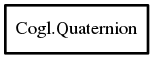

Quaternion
Object Hierarchy:

Description:
[ Compact ]
public class Quaternion
Content:
Static methods:
- public static Bool equal (void* v1, void* v2)
Methods:
- public Quaternion copy ()
- public float dot_product (Quaternion b)
- public void free ()
- public float get_rotation_angle ()
- public void get_rotation_axis (out float vector3)
- public void init (float angle, float x, float y, float z)
- public void init_from_angle_vector (float angle, float axis3f)
- public void init_from_array (float array)
- public void init_from_euler (Euler euler)
- public void init_from_matrix (Matrix matrix)
- public void init_from_quaternion (Quaternion src)
- public void init_from_x_rotation (float angle)
- public void init_from_y_rotation (float angle)
- public void init_from_z_rotation (float angle)
- public void init_identity ()
- public void invert ()
- public void multiply (Quaternion left, Quaternion right)
- public void nlerp (Quaternion a, Quaternion b, float t)
- public void normalize ()
- public void pow (float exponent)
- public void slerp (Quaternion a, Quaternion b, float t)
- public void squad (Quaternion prev, Quaternion a, Quaternion b, Quaternion next, float t)
Fields:
- public float w
- public float x
- public float y
- public float z